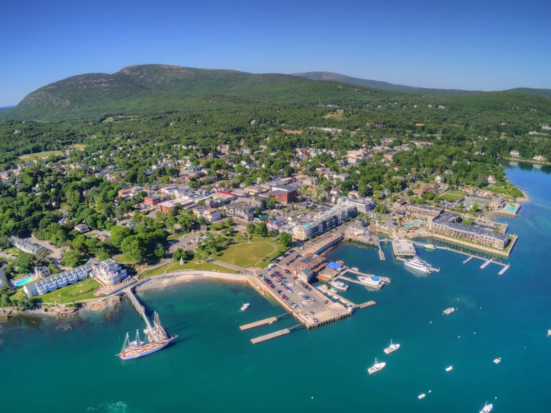
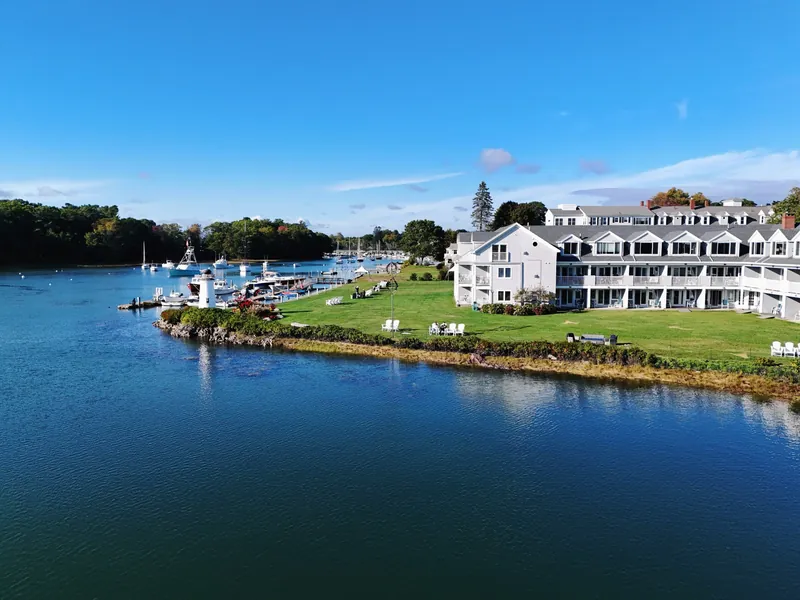
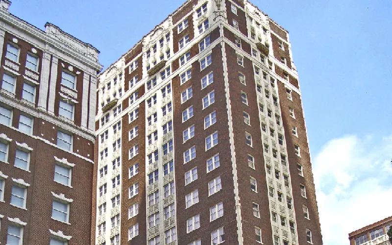
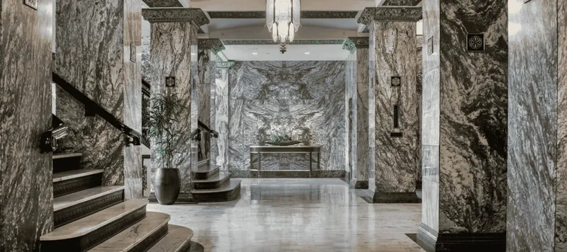
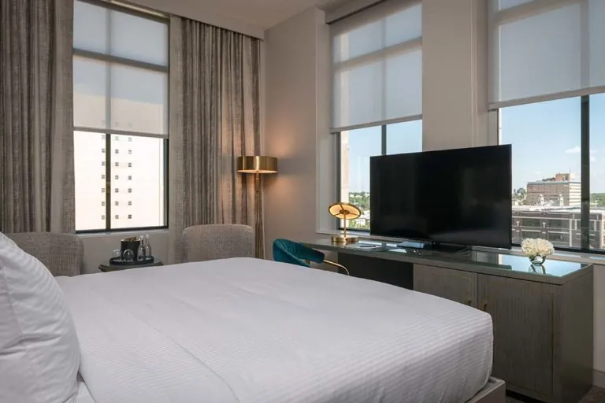
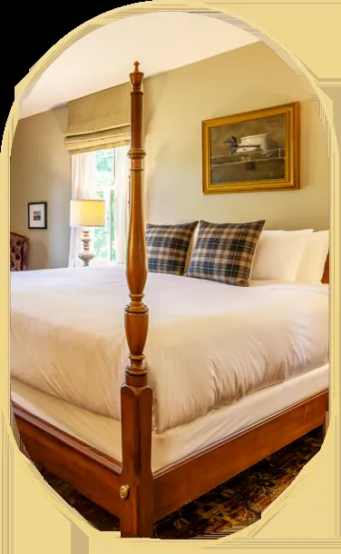
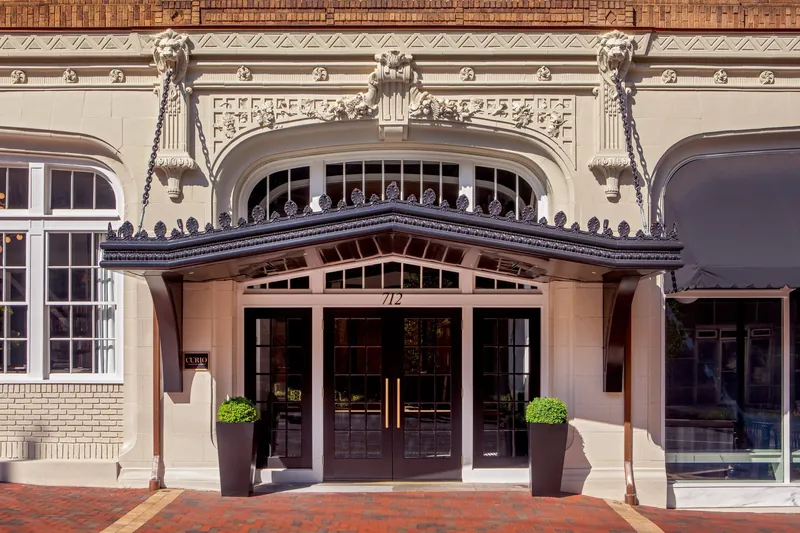

Bar Harbor Inn
Bar Harbor, Maine, United States
1 Newport Drive, Bar Harbor, ME 04609
The places
Each pin sits at the stay’s true location. Places without a precise point stay in the list without a pin.
The map loads when you scroll to it. The list is below.
Map data © OpenStreetMap
The list
Bar Harbor

Bar Harbor, Maine, United States
1 Newport Drive, Bar Harbor, ME 04609
Kennebunkport

Kennebunkport, Maine, United States
95 Ocean Avenue, Kennebunkport, ME 04046
York
York, Maine, United States
229 Nubble Road, York, ME 03909
Kansas City

Kansas City, Missouri, United States
106 W 12th Street, Kansas City, MO 64105
Whitefield
Whitefield, New Hampshire, United States
Listed as: Mountain Grand View
101 Mountain View Road, Whitefield, NH 03598
Oklahoma City

Oklahoma City, Oklahoma, United States
Listed as: Colcord
15 N Robinson Ave, Oklahoma City, OK 73102
Tulsa

Tulsa, Oklahoma, United States
Listed as: Tulsa Club Hotel Curio
115 E. 5th St., Tulsa, OK 74103
Fort Worth
Fort Worth, Texas, United States
Listed as: The Sinclair Autograph Collection
512 Main Street, Fort Worth, TX 76102
Woodstock

Woodstock, Vermont, United States
43 Senior Lane, Woodstock, VT 05091
Lynchburg

Lynchburg, Virginia, United States
Listed as: Virginian Hotel
712 Church Street, Lynchburg, VA 24504
Norfolk
Norfolk, Virginia, United States
Listed as: Hilton Norfolk
100 E. Main Street, Norfolk, VA 23510
Roanoke
Roanoke, Virginia, United States
Listed as: Hotel Roanoke
110 Shenandoah Ave NW, Roanoke, VA 24016